파주 하츠 후드 교체 비용과 작업 순서
입주를 앞둔 파주 금촌의 한 아파트에서 오래된 주방 후드를 하츠 후드로 바꾼 현장이에요. 요리할 때 냄새가 잘 빠지지 않고, 오히려 후드 쪽으로 냄새가 되돌아오는 문제가 있었어요. 후드 본체만 바꾸지 않고 자바라와 댐퍼까지 함께 교체해서 냄새 역류의 원인을 같이 잡았어요.
← 밀어서 전후 비교 →
파주 금촌 아파트, 입주 전에 후드를 바꾼 이유
고객님은 이사 들어가기 전에 주방을 먼저 정리하고 싶어 하셨어요. 기존 후드는 오래 써서 흡입력이 많이 약해져 있었고, 켜 두어도 냄새가 집 안에 남는 상태였어요. 후드 안쪽과 벽면 타일에는 기름때가 두껍게 쌓여 있었고, 작동할 때 소음도 났어요.
냄새가 거꾸로 올라오는 문제는 후드 본체보다 배기 통로에서 생기는 경우가 많아요. 그래서 이 현장에서는 후드를 떼어 낸 뒤 자바라(배기 호스) 안쪽과 댐퍼 상태를 먼저 확인했어요. 자바라 안은 찌든 때로 막혀 있었고, 바깥 공기와 냄새를 막아 주는 댐퍼도 제 역할을 못 하고 있었어요.
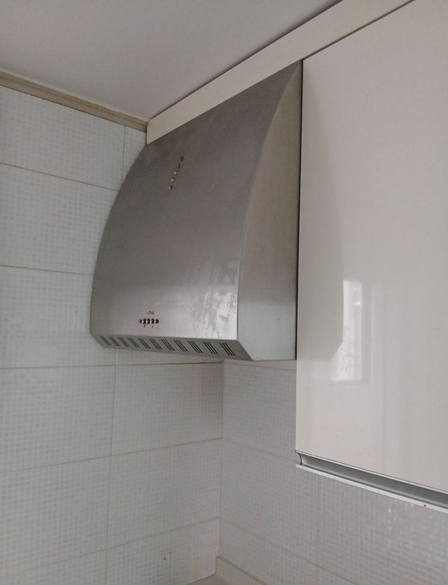
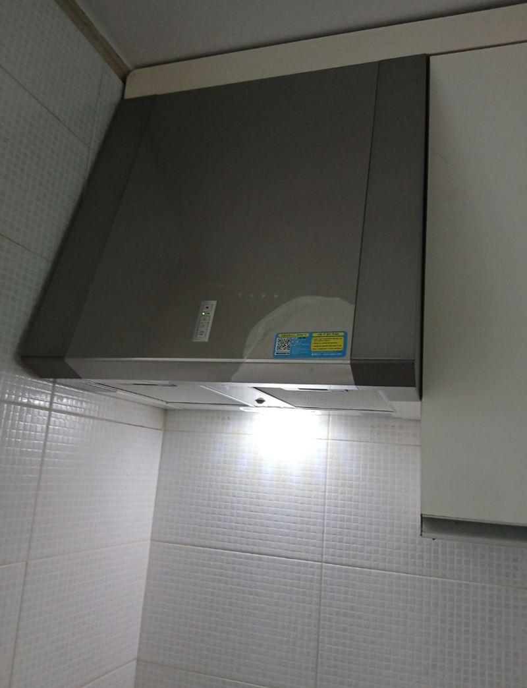
파주 하츠 후드 교체 작업 순서
-
기존 후드 분해·철거
전원을 먼저 차단하고, 상부장에 고정된 나사를 풀어 기존 후드를 내렸어요. 후드를 떼어 내면 상부장 안쪽 구조와 배기구 위치가 보여서, 새 후드를 어떻게 고정할지 이때 정해요.
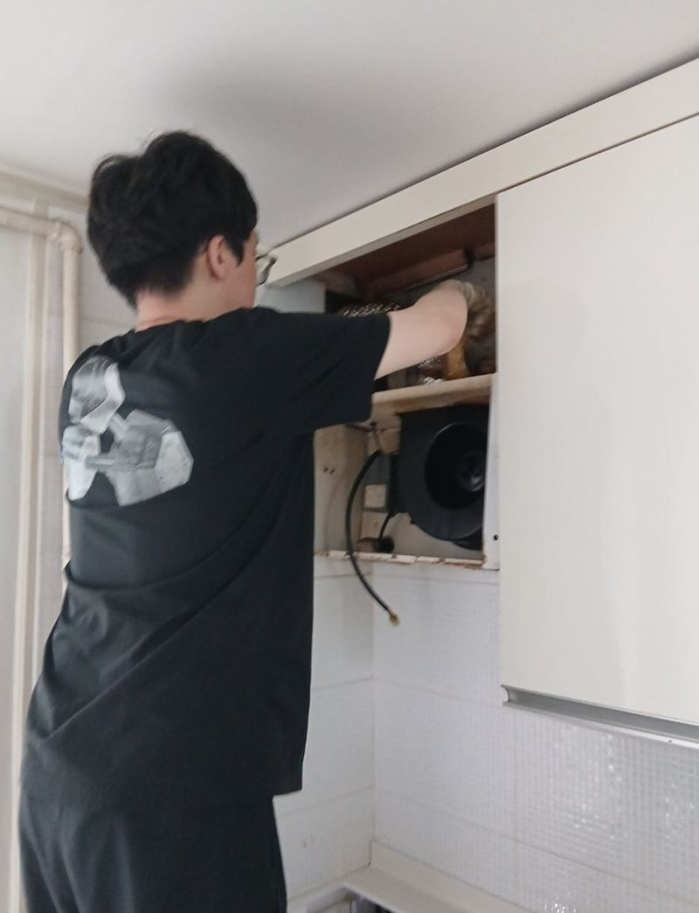
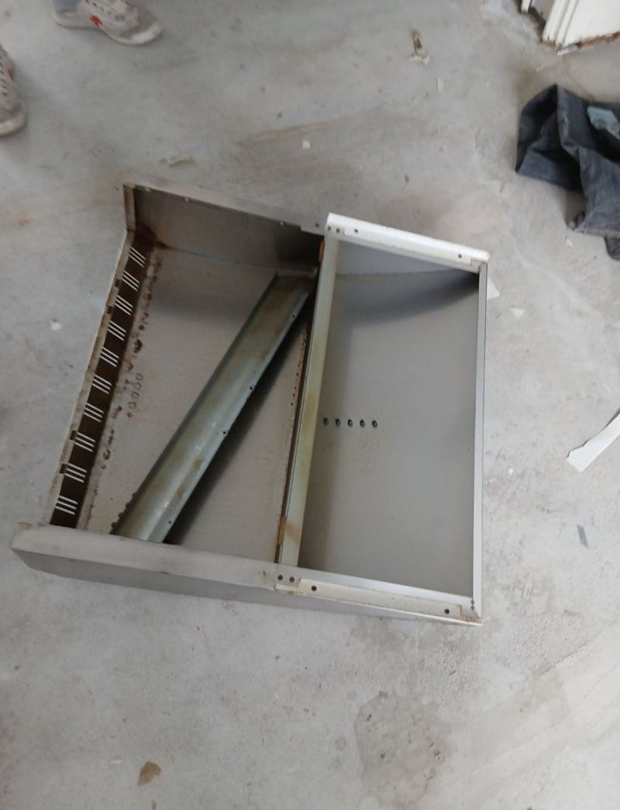
-
벽면 기름때 정리
후드가 있던 자리 뒤쪽 타일에는 오랫동안 쌓인 기름때와 먼지가 남아 있었어요. 새 후드를 달기 전에 이 부분을 닦아 내서, 설치 후에 보이지 않는 곳까지 깨끗하게 맞췄어요.
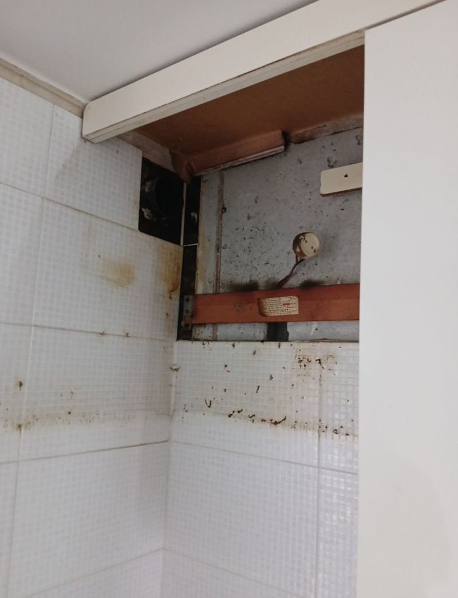
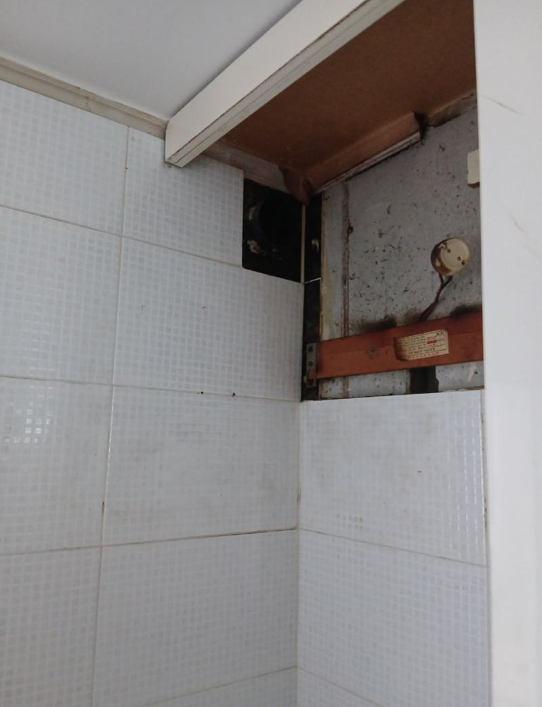
-
오래된 자바라 제거
떼어 낸 자바라 안쪽은 검게 찌든 때로 덮여 있었어요. 이런 상태면 새 후드를 달아도 공기가 잘 빠지지 않아서, 연결부를 풀고 통째로 걷어 냈어요.
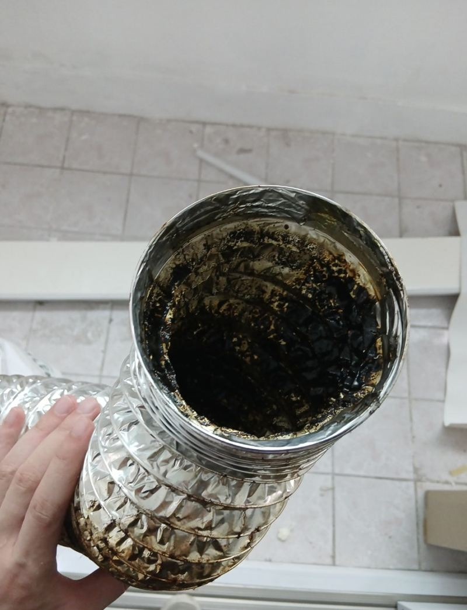
-
브라켓 고정
새 하츠 후드를 받칠 브라켓을 상부장 아래에 달았어요. 수평계로 높이를 맞추고, 고정면 상태에 맞춰 앙카로 보강해 후드가 흔들리지 않게 했어요.
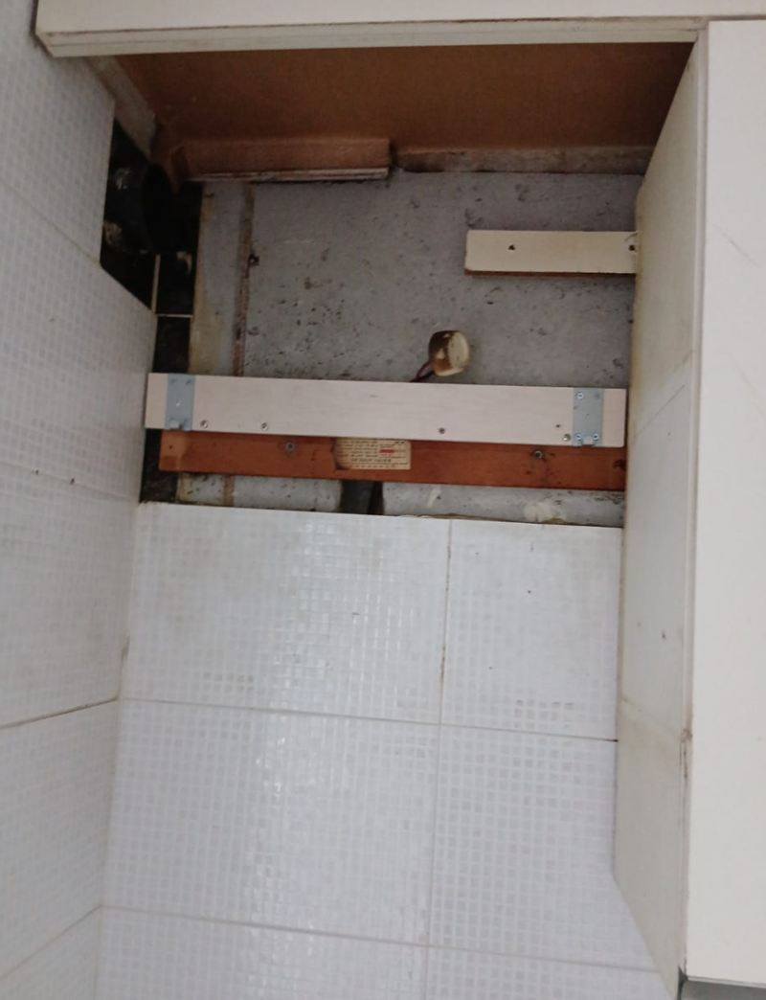
-
새 하츠 후드 설치
배기 방향과 전선 연결 위치를 맞춘 뒤 본체를 브라켓에 끼워 고정했어요.
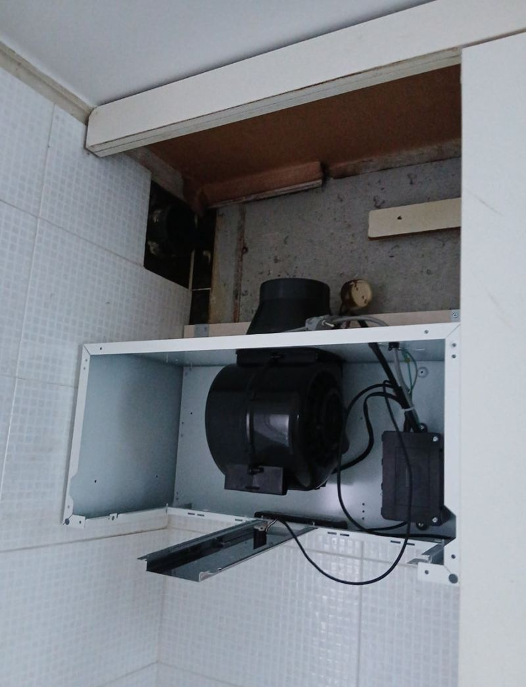
-
새 자바라 연결
새 자바라는 후드 배기구에서 바깥 통풍구까지 이어지는 길이에 맞춰 잘랐어요. 주름을 충분히 펴서 연결해야 공기가 막힘없이 빠져나가요.
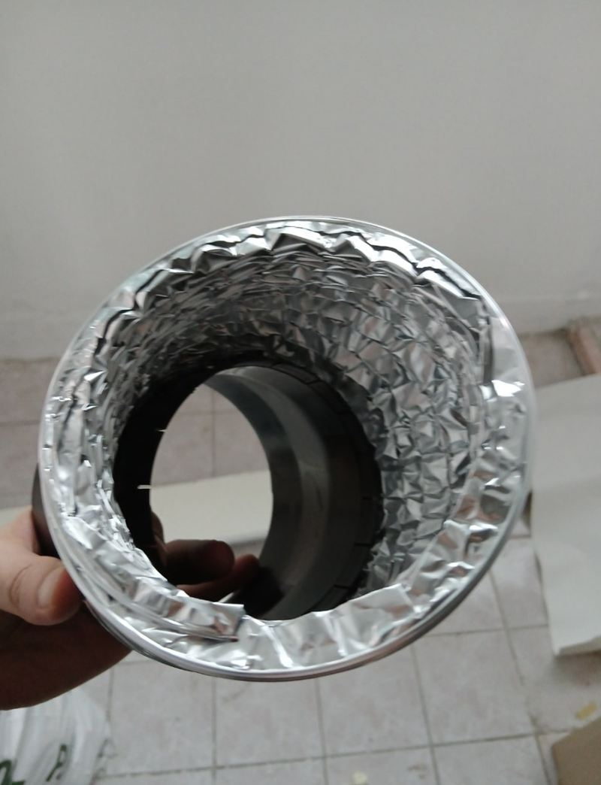
-
댐퍼 장착과 작동 확인
마지막으로 바깥 냄새와 바람이 주방으로 들어오지 않게 막아 주는 댐퍼를 달았어요. 설치한 뒤에는 후드를 켜고 끄면서 댐퍼가 제대로 열리고 닫히는지 확인했어요.
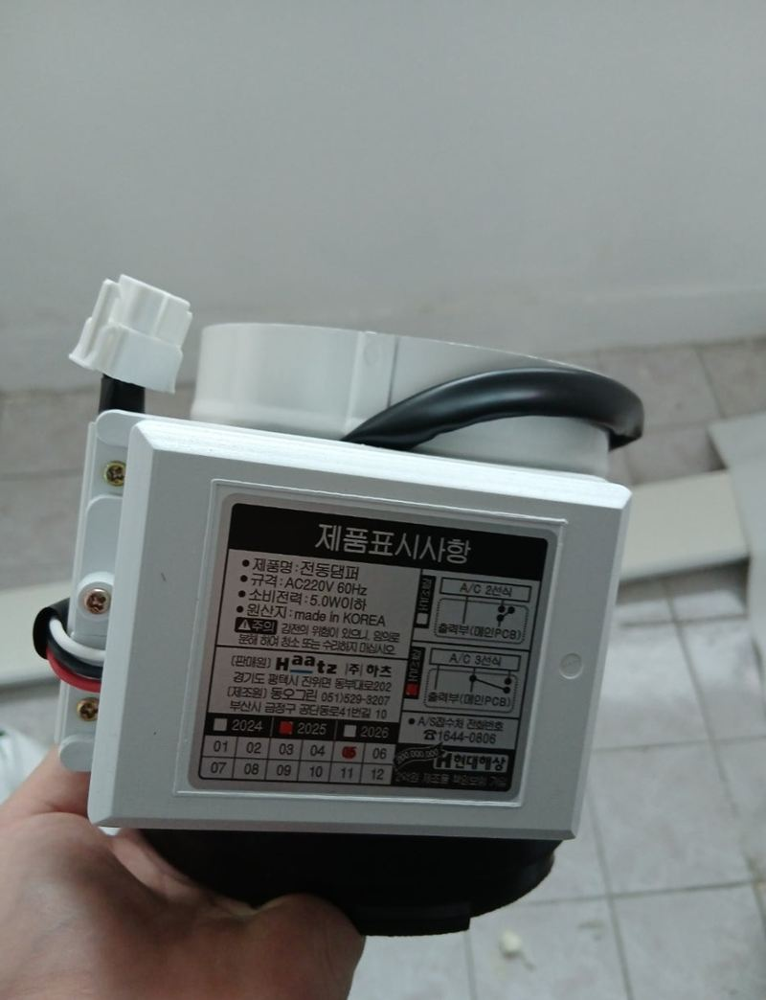
하츠 후드 교체 비용, 무엇에 따라 갈릴까
같은 하츠 후드라도 집마다 금액이 같지 않아요. 파주 현장을 기준으로 보면 아래 다섯 가지가 차이를 만들어요.
- 후드 종류와 크기슬라이딩형, 일반형, 침니형처럼 후드 종류와 가로 폭에 따라 제품과 작업 방법이 달라져요.
- 자바라·댐퍼 교체 여부본체만 바꿀지, 이번 현장처럼 배기 통로까지 함께 바꿀지에 따라 작업 범위가 달라져요.
- 상부장과 고정면 상태상부장 하판이 약하거나 기존 나사 자리가 망가져 있으면 보강 작업이 더해질 수 있어요.
- 배기구 위치와 전기 연결배기구가 멀거나 전원 위치가 맞지 않으면 연결 방법을 따로 잡아야 해요.
- 기존 후드 철거와 정리떼어 낸 후드의 처리 방법도 비용에 영향을 줘요.
후드 정면과 상부장 아래를 찍은 사진 두 장이면 대략적인 작업 범위를 말씀드릴 수 있어요.
우리 집 후드 증상, 어디가 문제일까
| 이런 증상이라면 | 먼저 의심해 볼 곳 |
|---|---|
| 켜 놔도 고기 냄새가 거실까지 퍼져요 | 모터 흡입력 저하, 막힌 자바라 |
| 후드를 끄면 남의 집 음식 냄새가 들어와요 | 댐퍼 고장 또는 댐퍼 없음 |
| 윙윙 소리가 커지고 진동이 느껴져요 | 모터 노후, 본체 고정 풀림 |
| 필터 쪽에서 기름이 뚝뚝 떨어져요 | 필터 기름때 포화, 본체 안쪽 오염 |
파주 현장은 첫째와 둘째가 겹친 경우였어요. 그래서 본체 교체와 함께 자바라와 댐퍼를 같이 바꿨어요. 교체 전에 지금 후드의 가로 폭과 상부장 아래 공간을 재 두시면 맞는 제품을 고르기 쉬워요.
후드 교체 전에 많이 검색하시는 질문
후드만 새로 바꾸면 냄새 역류가 없어지나요?
원인에 따라 달라요. 역류는 자바라 막힘이나 댐퍼 고장에서 오는 경우가 많아서, 배기 통로까지 같이 봐야 해요.
이사 들어가기 전에 바꾸는 게 좋을까요?
짐이 들어오기 전이면 상부장 주변을 비우기 쉬워서 작업이 수월해요. 이 현장도 입주 전에 진행했어요.
하츠 말고 다른 브랜드 후드로 바꿔도 되나요?
크기와 고정 방식이 맞으면 가능해요. 원하시는 제품 모델명을 알려주시면 지금 자리에 맞는지 확인해 드려요.
쓰던 후드와 크기가 달라도 설치되나요?
같은 크기면 상부장을 손댈 일이 적어요. 폭이 달라지면 상부장 하판 구조를 보고 가능한지 판단해요.
화장실 환풍기 냄새 역류도 같은 원인인가요?
화장실도 댐퍼가 고장 나면 다른 집 냄새가 들어올 수 있어요. 주방 작업 때 함께 문의하셔도 돼요.
다른 지역 후드 교체 현장
파주처럼 냄새 역류가 고민이라면, 후드 모델명과 사는 지역을 말씀해 주세요.
전화 상담 010-4517-9872